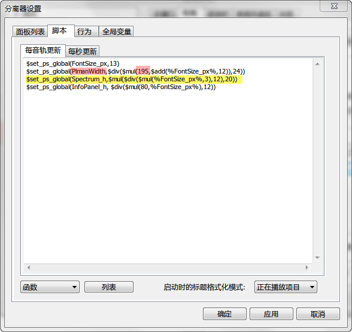

某些面板尺寸调整
受 CUI+PSS 功能限制，foobox 手动调整面板尺寸的功能不多。上一章 "高分屏适配指南" 里用到的第一个面板栈分离器配置对话框这里继续使用。
【左栏播放列表管理器面板宽度微调】
第二个变量 PlmanWidth 是控制左栏播放列表管理器面板宽度的，如果你觉得太小，可以把195改大点。
【删除右栏下部的频谱面板】
有些用户不喜欢频谱或不喜欢它占用右栏面板空间，下面两步可以删掉它：
1. 到 \Foobar2000\components 目录下删掉foo_uie_vis_channel_spectrum.dll这个组件。
2. 把上图第三个变量定义 $set_ps_global(Spectrum_h,$mul($div($mul(%FontSize_px%,3),12),20)) 这行改成 $set_ps_global(Spectrum_h,5) 即可。
---The End---